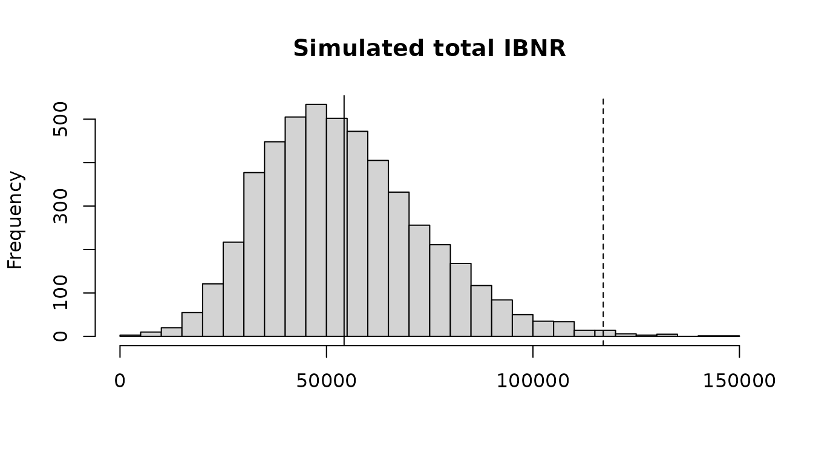

Claims reserving with the chain ladder and its relatives
Yiannis Parizas
Source:vignettes/Reserving.Rmd
Reserving.Rmd1. Introduction
This vignette estimates the reserves of a claims triangle: the claims of each origin period (such as an accident year) that are still to be paid or reported. It goes from the chain ladder to methods that use premiums, measures how uncertain the reserves are, and projects paid and incurred claims together.
Every method here also runs in the reserving tool,
run_shiny_reserving_tool(), where the link ratios can be
left out with a click and the method of each origin chosen from a
list.
2. A triangle
A triangle is a matrix of cumulative claims, one row per origin and
one column per development period, with NA for the future.
raa_triangle holds the incurred claims of the Reinsurance
Association of America (in thousands), a triangle much used to compare
methods:
## development
## origin 1 2 3 4 5 6 7 8 9 10
## 1981 5012 8269 10907 11805 13539 16181 18009 18608 18662 18834
## 1982 106 4285 5396 10666 13782 15599 15496 16169 16704 NA
## 1983 3410 8992 13873 16141 18735 22214 22863 23466 NA NA
## 1984 5655 11555 15766 21266 23425 26083 27067 NA NA NA
## 1985 1092 9565 15836 22169 25955 26180 NA NA NA NA
## 1986 1513 6445 11702 12935 15852 NA NA NA NA NA
## 1987 557 4020 10946 12314 NA NA NA NA NA NA
## 1988 1351 6947 13112 NA NA NA NA NA NA NA
## 1989 3133 5395 NA NA NA NA NA NA NA NA
## 1990 2063 NA NA NA NA NA NA NA NA NAData usually comes as a table, one row per origin and development
period, or one row per payment. as_triangle() builds the
triangle from it. With incremental amounts, those of the same cell are
added up:
head(simulated_motor_claims)## accident_year development_year paid incurred earned_premium
## 1 2014 1 1644095 3709012 8150000
## 2 2014 2 1502381 1044516 8150000
## 3 2014 3 714586 164925 8150000
## 4 2014 4 491949 222467 8150000
## 5 2014 5 362668 48340 8150000
## 6 2014 6 249976 64828 8150000
motor <- as_triangle(simulated_motor_claims, "accident_year", "development_year", "paid", cumulative = FALSE)
motor[1:4, 1:6]## development
## origin 1 2 3 4 5 6
## 2014 1644095 3146476 3861062 4353011 4715679 4965655
## 2015 1879754 3451386 4286565 4805419 5109496 5419496
## 2016 1948022 3576956 4752049 5456660 5792357 6080841
## 2017 2248011 3842756 5095157 5668707 6200949 65795283. The chain ladder and Mack’s standard errors
The chain ladder develops each origin’s latest claims to ultimate
with the average ratio of one development period’s claims to the
previous one’s. chain_ladder() also gives Mack’s standard
error of each origin’s reserve and of the total, split into the process
error (the randomness of the claims to come) and the parameter error
(that of the estimated factors):
cl <- chain_ladder(raa_triangle)
cl## Chain ladder
##
## origin latest developed ultimate ibnr se cv process_se parameter_se
## 1981 18,834 1.000 18,834 0 0 0 0
## 1982 16,704 0.991 16,858 154 143 0.928 104 98
## 1983 23,466 0.974 24,083 617 592 0.959 451 383
## 1984 27,067 0.943 28,703 1,636 713 0.436 530 476
## 1985 26,180 0.905 28,927 2,747 1,452 0.529 1,219 790
## 1986 15,852 0.813 19,501 3,649 1,995 0.547 1,820 817
## 1987 12,314 0.694 17,749 5,435 2,204 0.405 2,039 837
## 1988 13,112 0.546 24,019 10,907 5,354 0.491 4,946 2,051
## 1989 5,395 0.336 16,045 10,650 6,332 0.595 6,034 1,918
## 1990 2,063 0.112 18,402 16,339 24,566 1.503 23,464 7,275
## Total 160,987 0.755 213,122 52,135 26,881 0.516 24,917 10,085
round(cl$factors, 3)## 1-2 2-3 3-4 4-5 5-6 6-7 7-8 8-9 9-10
## 2.999 1.624 1.271 1.172 1.113 1.042 1.033 1.017 1.009The IBNR is the ultimate less the latest claims: for an incurred
triangle the claims not yet reported, for a paid one the case reserves
as well. These results match those of the ChainLadder package’s
MackChainLadder().
Choosing the factors
The volume-weighted factors can be replaced by simple averages, limited to the latest calendar periods, or computed without the link ratios that look out of line. The first link ratio of 1982 is 40: its claims grew from 106 to 4,285.
round(cl$link_ratios[1:3, 1:3], 2)## development
## origin 1-2 2-3 3-4
## 1981 1.65 1.32 1.08
## 1982 40.42 1.26 1.98
## 1983 2.64 1.54 1.16
exclude <- matrix(FALSE, 10, 9)
exclude[2, 1] <- TRUE
selected <- chain_ladder(raa_triangle, average = "simple", periods = 5, exclude = exclude)
round(selected$factors, 3)## 1-2 2-3 3-4 4-5 5-6 6-7 7-8 8-9 9-10
## 5.420 1.889 1.229 1.190 1.127 1.043 1.034 1.018 1.009
selected$total[c("ultimate", "ibnr", "se")]## ultimate ibnr se
## 236873.41 75886.41 27435.99A tail
The triangle stops at ten years, but claims can develop after that. A tail factor takes the last development period to ultimate. It can be entered, or fitted as a curve to the factors and extrapolated:
tailed <- chain_ladder(raa_triangle, tail = "exponential")
tailed$tail## [1] 1.009436
tailed$total[c("ultimate", "ibnr", "se")]## ultimate ibnr se
## 215133.20 54146.20 27153.694. Methods with premiums
The chain ladder relies only on each origin’s own claims, which for the latest origins are few. The Bornhuetter-Ferguson method adds an a priori ultimate, premium times an expected loss ratio, and keeps the latest claims plus the share of the a priori still to develop. Benktander iterates the method once more, and the Cape Cod estimates the loss ratio from the triangle itself. The simulated motor portfolio has premiums:
premium <- unique(simulated_motor_claims[c("accident_year", "earned_premium")])$earned_premium
cl_motor <- chain_ladder(motor)
bf <- bornhuetter_ferguson(cl_motor, premium, loss_ratio = 0.68)
bk <- bornhuetter_ferguson(cl_motor, premium, loss_ratio = 0.68, iterations = 2)
cc <- cape_cod(cl_motor, premium)
cc$total[["loss_ratio"]]## [1] 0.6971151
ultimates <- data.frame(
origin = cl_motor$by_origin$origin,
developed = round(cl_motor$by_origin$developed, 3),
chain_ladder = round(cl_motor$by_origin$ultimate),
bornhuetter_ferguson = round(bf$by_origin$ultimate),
benktander = round(bk$by_origin$ultimate),
cape_cod = round(cc$by_origin$ultimate)
)
tail(ultimates, 4)## origin developed chain_ladder bornhuetter_ferguson benktander cape_cod
## 9 2022 0.826 6801772 6900577 6818999 6932912
## 10 2023 0.724 7311556 7476373 7357122 7531398
## 11 2024 0.565 9692085 8938032 9364312 9025090
## 12 2025 0.300 8078939 7985219 8013302 8125270For the latest years the chain ladder multiplies few claims by large factors: for 2024, 57% developed, its ultimate is 9.7 million, against 8.9 to 9.4 million from the methods that lean on the premium. For the older years all the methods agree. Divided by the premiums, the ultimates give each year’s loss ratio, a starting point for pricing:
## [1] 0.640 0.648 0.771 0.6955. How uncertain the reserves are
Until the claims are all paid
Mack’s standard error measures the uncertainty of the reserve until every claim is paid. A bootstrap gives the whole distribution: England and Verrall’s method resamples the residuals of an over-dispersed Poisson chain ladder, refits it to each simulated triangle and simulates the future payments:
boot <- bootstrap_chain_ladder(raa_triangle, n = 5000, seed = 1)
round(boot$total[c("ibnr", "se", "p75", "p99.5")])## ibnr se p75 p99.5
## 54261 19720 66117 117015
hist(boot$total_reserves, breaks = 50, main = "Simulated total IBNR", xlab = NULL)
abline(v = boot$total[c("ibnr", "p99.5")], lty = c(1, 2))
Over one year
Solvency II looks at one year: how much the ultimate can move as the next year’s claims emerge and the factors are estimated again, the claims development result. Merz and Wuthrich’s formulas give its standard error, which is below Mack’s, as part of the uncertainty is resolved only in later years:
merz_wuthrich(raa_triangle)## Merz-Wuthrich one-year claims development result
##
## origin latest ultimate ibnr one_year_se mack_se
## 1981 18,834 18,834 0 0 0
## 1982 16,704 16,858 154 143 143
## 1983 23,466 24,083 617 570 592
## 1984 27,067 28,703 1,636 378 713
## 1985 26,180 28,927 2,747 1,299 1,452
## 1986 15,852 19,501 3,649 1,668 1,995
## 1987 12,314 17,749 5,435 1,186 2,204
## 1988 13,112 24,019 10,907 4,691 5,354
## 1989 5,395 16,045 10,650 4,707 6,332
## 1990 2,063 18,402 16,339 23,610 24,566
## Total 160,987 213,122 52,135 25,166 26,8816. Paid and incurred claims together
The chain ladders of paid and of incurred claims often disagree. An origin whose paid claims are low against its incurred claims is projected low on paid and high on incurred. The Munich chain ladder of Quarg and Mack corrects each factor by how far the origin’s paid to incurred ratio is from its development period’s average, so that the two projections meet:
mcl <- munich_chain_ladder(quarg_mack_paid, quarg_mack_incurred)
shown <- mcl$by_origin[, c("origin", "latest_ratio", "chain_ladder_paid", "chain_ladder_incurred",
"ultimate_paid", "ultimate_incurred")]
shown[-1] <- round(shown[-1], 2)
shown## origin latest_ratio chain_ladder_paid chain_ladder_incurred ultimate_paid
## 1 1 0.98 2131.00 2174.00 2131.00
## 2 2 0.96 2380.39 2445.00 2384.84
## 3 3 0.97 4652.18 4581.51 4553.62
## 4 4 0.95 6181.61 6126.36 6069.51
## 5 5 0.96 5055.60 4839.02 4878.95
## 6 6 0.91 4934.09 4476.12 4599.00
## 7 7 0.41 6128.34 8428.84 7504.58
## ultimate_incurred
## 1 2174.00
## 2 2443.22
## 3 4634.36
## 4 6182.35
## 5 4957.81
## 6 4672.40
## 7 7655.387. References
Mack, T. (1993). Distribution-free calculation of the standard error of chain ladder reserve estimates. ASTIN Bulletin 23(2), 213-225.
England, P. D. and Verrall, R. J. (2002). Stochastic claims reserving in general insurance. British Actuarial Journal 8(3), 443-518.
Merz, M. and Wuthrich, M. V. (2008). Modelling the claims development result for solvency purposes. CAS E-Forum, Fall 2008, 542-568.
Quarg, G. and Mack, T. (2004). Munich chain ladder. Blatter DGVFM 26(4), 597-630.